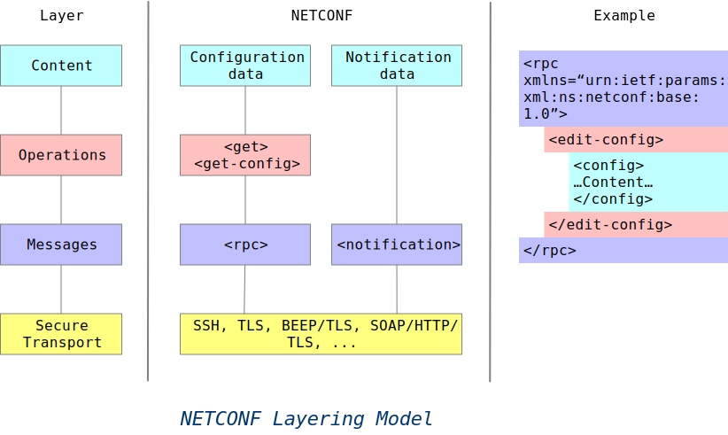
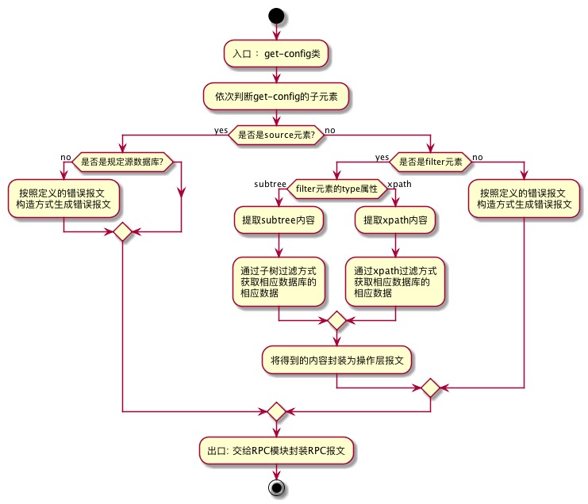
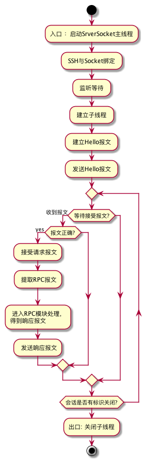

NETCONF
NETCONF是一个基于XML的交换机配置接口，用于替代CLI、SNMP等配置交换机。
本质上来说,NETCONF就是利用XML-RPC的通讯机制实现配置客户端和配置服务端之间的通信，实现对网络设备的配置和管理。
协议
NETCONF通过RPC与交换机通信，其协议包含四层
Layer Example
+-------------+ +-----------------+ +----------------+
(4) | Content | | Configuration | | Notification |
| | | data | | data |
+-------------+ +-----------------+ +----------------+
| | |
+-------------+ +-----------------+ |
(3) | Operations | | <edit-config> | |
| | | | |
+-------------+ +-----------------+ |
| | |
+-------------+ +-----------------+ +----------------+
(2) | Messages | | <rpc>, | | <notification> |
| | | <rpc-reply> | | |
+-------------+ +-----------------+ +----------------+
| | |
+-------------+ +-----------------------------------------+
(1) | Secure | | SSH, TLS, BEEP/TLS, SOAP/HTTP/TLS, ... |
| Transport | | |
+-------------+ +-----------------------------------------+
- (1) 安全传输层，用于跟交换机安全通信，NETCONF并未规定具体使用哪种传输层协议，所以可以使用SSH、TLS、HTTP等各种协议
- (2) 消息层，提供一种传输无关的消息封装格式，用于RPC通信
- (3) 操作层，定义了一系列的RPC调用方法，并可以通过Capabilities来扩展
- (4) 内容层，定义RPC调用的数据内容
NETCONF Layering Model And Example

NETCONF技术规范
安全传输层
可以使用多种传输协议来进行数据传输，官方默认使用SSH进行加密及数据传输。
消息层
消息层流程PlantUML请查看netconf-messages-layer-flow.puml
上面的流程图看起来比较多，其实总结起来也主要是六步
- 通过传输协议层模块得到
NETCONF的请求报文后，就应交由RPC模块处理如果NETCONF报文经过了压缩或加密的话，先进行解压和解密 - 然后将
RPC请求报文，用RFC4741的XML Schema文件进行验证 - 如果符合
NETCONF的报文格式则解析文档中的RPC元素部分，进行RPC元素中message—id和命名空间属性的检查和保存 - 然后将内部的操作层元素取出传给操作层模块
- 如果操作层模块处理成功，返回正确的报文
- RPC模块再将返回的响应报文进行
RPC层的封装，然后发送给对应的客户端。如果中途在某个环节检查错误或操作层模块错误，则统一封装成错误处理报文，发送给客户端
操作层
NETCONF提供了九种基本操作：
这些操作的参数都各不相同，因此每种操作都有自己的处理流程
以get-config为例，我们来看看get-config请求报文的解析流程:

get-config请求报文解析流程PlantUML请查看netconf-get-config-flow.puml
内容层
内容层即配置数据库
NETCONF实现流程

NETCONF实现流程PlantUML请查看netconf-implementation-process.puml
NETCONF实现的关键技术
关键的环节包括：安全认证、建立加密传输通道、rpc-xml消息收发、rpc-xml文件解析、rpc-reply消息 的生成。
安全认证实现
使用ssh密钥认证方法，在Client端生成一对密钥，将公钥传给Server相关目录进行备份，借助libssh2函数库的相关函数完成安全认证。
加密通道建立
借助SSHv2本地端口转发功能分别在Client端和Server端建立一个SSH隧道，实现Client端12500端口和Server 830端口的数据经过SSH传输。
命令：ssh -2 –N–C –f –L 12500:172.16.15.213:830 （Client端执行）
命令：ssh -2 –N–C –f –L 830:172.16.15.213:12500 （Server端执行）
xml-rpc消息收发
Client端需要将rpc-xml文件转换为内容为rpc请求的xml化的字符，send()到Server，Server端在recv()收到字符之后利用libxml2库函数生成rpc-xml文件的指针，借助xpath搜索原理进行相关数据定位，如果检索到相关操作关键字再调用相关函数生成rpc-reply文件并转换为字符格式send()到Client。
xml消息的解析
NETCONF中有9种操作每一种操作的元素各不一样，因此要建立很多个流程来处理每一个操作，对rpc-xml请求的合法性以及想要获得的数据等进行定位，这个是RPC层需要实现的核心内容。
xml消息的生成
原则上需要调用配置数据库的相关数据，执行并返回rpc-xml请求的结果。